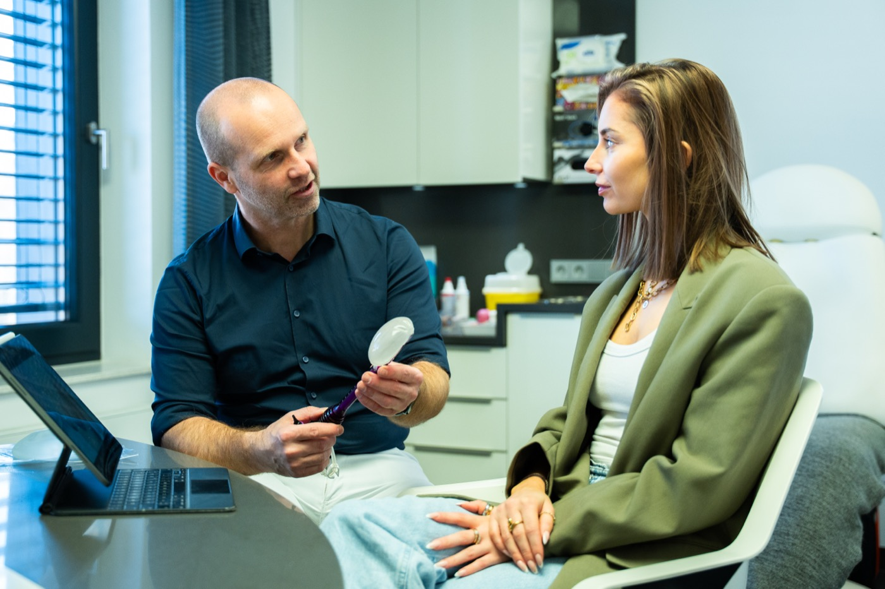
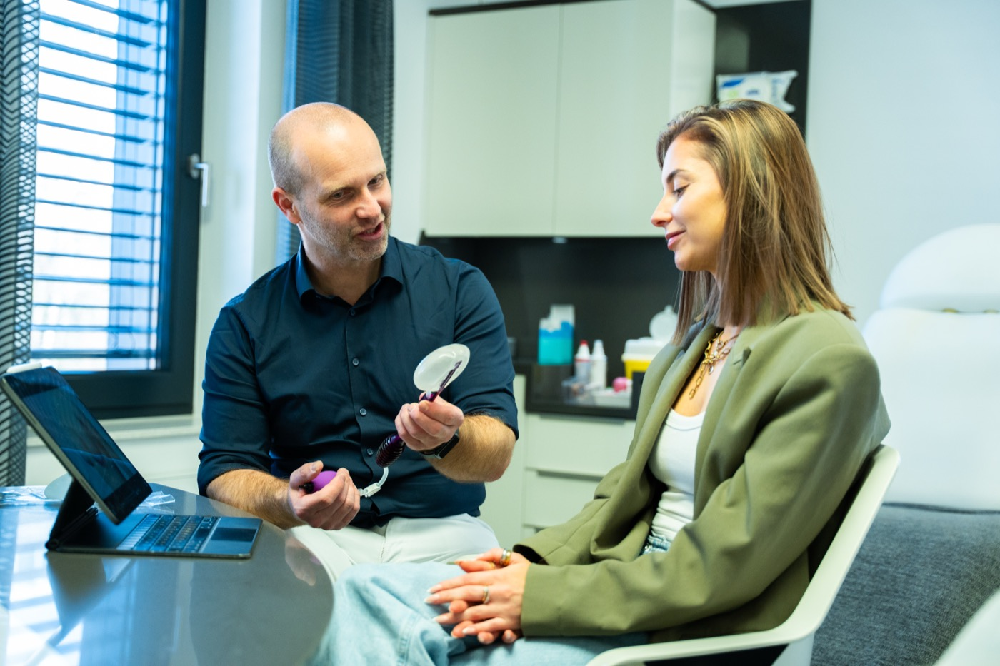
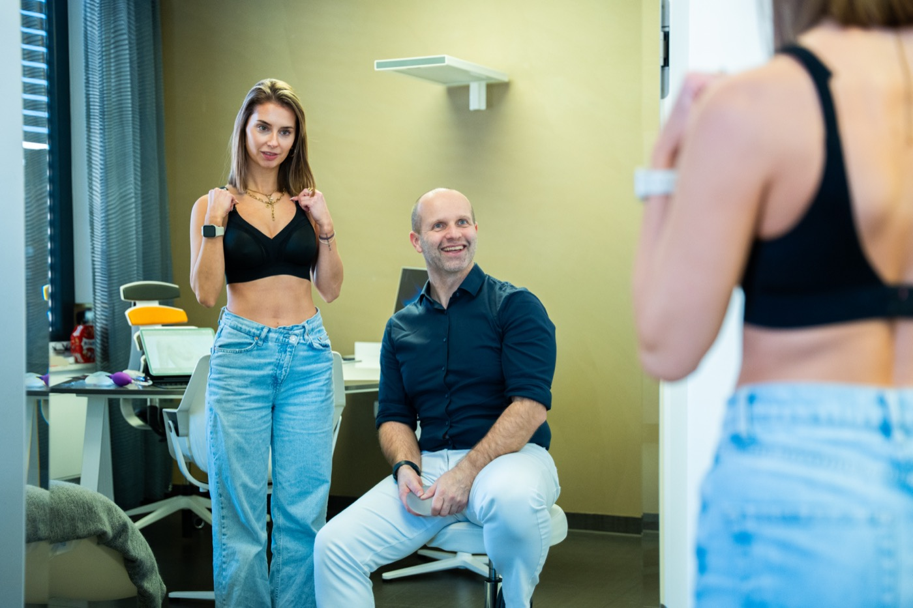
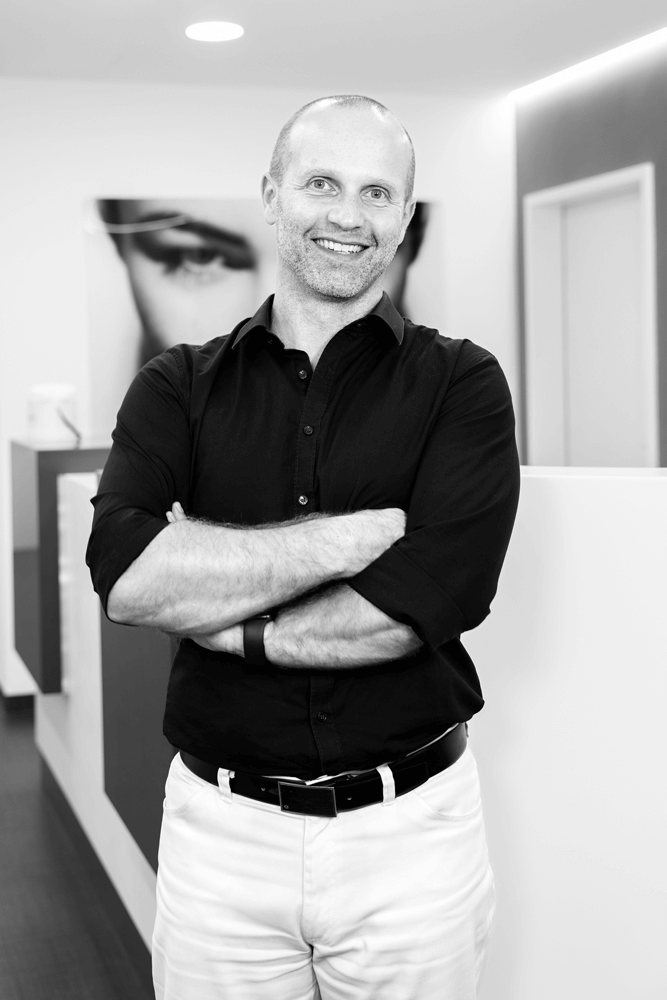
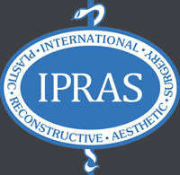
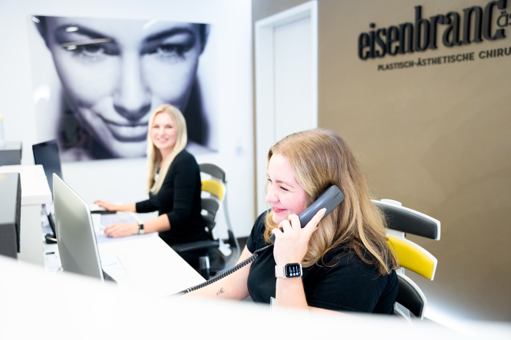
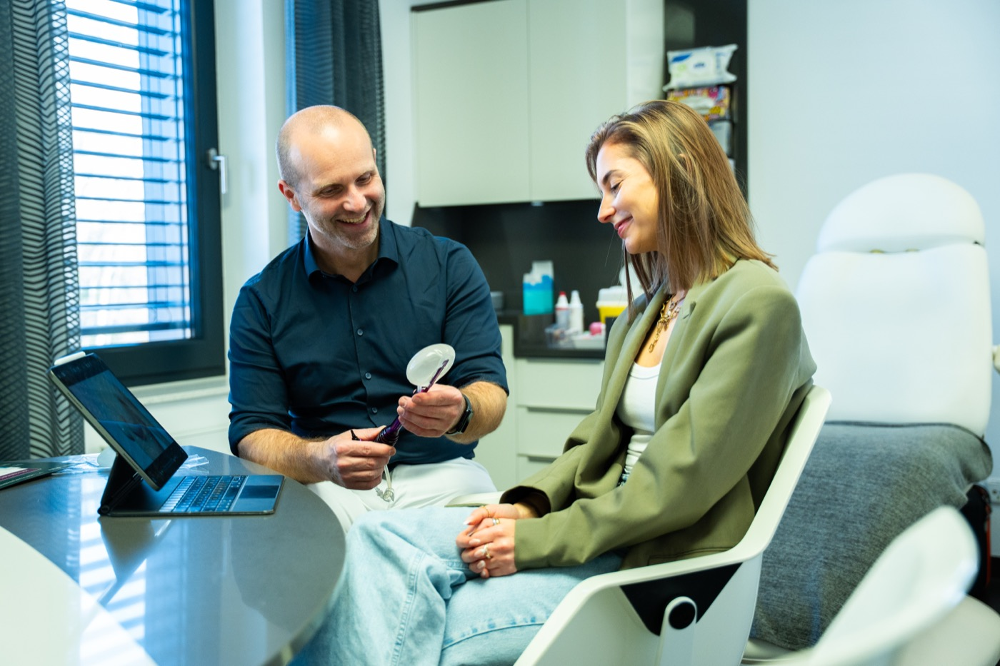
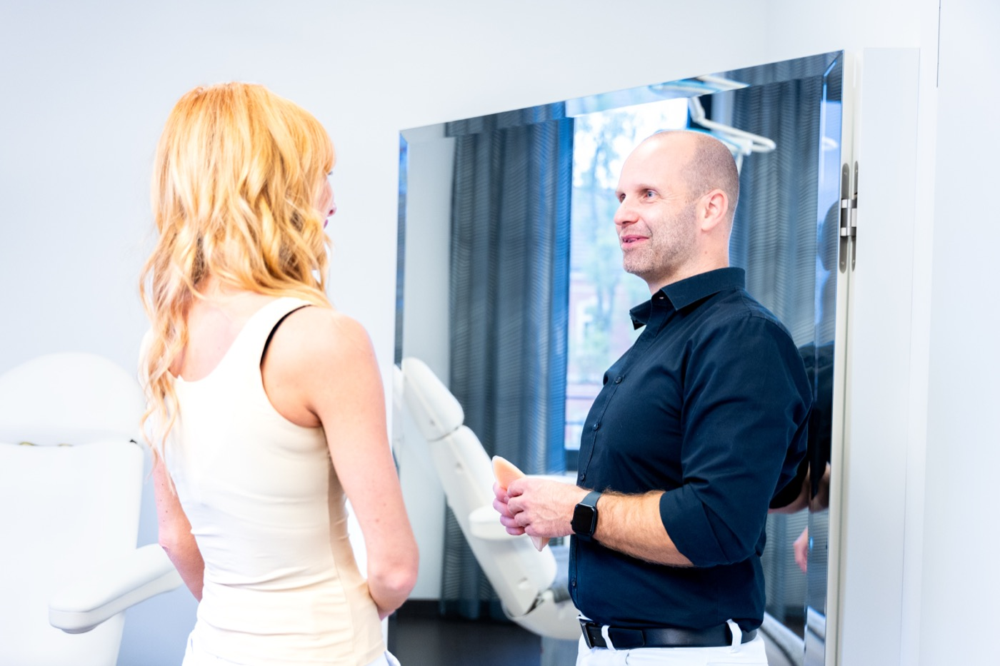

Wenn die Brust zur Last wird: Eine Brustverkleinerung nimmt das Gewicht, das Rücken und Seele täglich tragen, und schenkt Ihnen ein völlig neues Körpergefühl.
Unverbindlich · 100% vertraulich · Antwort innerhalb von 24h

„Endlich kann ich wieder selbstbewusst Klamotten tragen.“
Patientin nach Mammareduktionsplastik und Liposuktion · Bewertung via Jameda
Eine zu große Brust ist keine Frage der Eitelkeit. Sie ist eine tägliche Belastung, körperlich wie seelisch, oft schon seit jungen Jahren.
Rücken, Nacken und Schultern schmerzen fast täglich. Die schweren BH-Träger schneiden schmerzhafte Furchen in die Schultern.
Joggen, Schwimmen, selbst langes Stehen: Alles fühlt sich beschwerlich an. Sie schränken sich ein, wo andere sich frei bewegen.
Ungewollte Blicke, Kleidung, die nie richtig sitzt, das Gefühl, im eigenen Körper nicht zu Hause zu sein. Das zermürbt auf Dauer.
Viele Frauen tragen diese Last jahrelang, ehe sie sich Hilfe holen. Dabei ist die Brustverkleinerung für die meisten der Schlüssel zu einem neuen Lebensgefühl: weniger Gewicht, weniger Schmerzen, mehr Freiheit.
100% unverbindlich. 100% vertraulich. Kein Druck.
Überschüssiges Drüsen-, Fett- und Hautgewebe wird entfernt und die Brust neu geformt: kleiner, leichter und in natürlicher Proportion zu Ihrem Körper.

Der EingriffBei der Verkleinerung entfernen wir überschüssiges Gewebe und formen die Brust neu. Der Warzenhof wird dabei versetzt und bei Bedarf angepasst, für ein harmonisches, natürliches Gesamtbild.
Der Eingriff erfolgt in Vollnarkose. Dank unserer blutarmen Operationstechnik können viele Patientinnen die Klinik bereits am selben oder am nächsten Tag verlassen.

Individuell geplantJe nach Ausgangsbefund wählen wir gemeinsam die passende Schnittführung: die Lejour-Methode mit einer Narbe in Form eines kleinen „i“ oder die Strömbeck-Methode für größere Reduktionen, mit einem zusätzlichen Schnitt in der Unterbrustfalte.
Beide Techniken erlauben eine präzise, formschöne Neugestaltung der Brust. Die Narben liegen so, dass BH und Bikini sie verdecken, und verblassen mit der Zeit deutlich.
Sie wünschen keine Verkleinerung, sondern eine Straffung? Alle Informationen zur Bruststraffung bei eisenbrand ästhetik.
Unsere Operationstechnik mit modernsten Hochfrequenz- und Radiofrequenzgeräten macht den Unterschied, den Sie in den Tagen nach der OP spüren.
Bei eisenbrand ästhetik operieren wir mit modernsten Hochfrequenz- und Radiofrequenzgeräten. Die blutarme Präparation reduziert Wundsekret und Schwellungen so deutlich, dass auf Drainageschläuche in den meisten Fällen komplett verzichtet werden kann.
Das bedeutet für Sie: ein deutlich angenehmerer Start in die Heilung, mehr Bewegungsfreiheit ab dem ersten Tag und oft schon die Entlassung am selben oder nächsten Tag.
Als eine der wenigen Kliniken in Deutschland bieten wir zudem endoskopische, videoassistierte Brustoperationen an, ein Beleg für den technischen Anspruch, mit dem wir jede Brust-OP durchführen.
Eine Brustverkleinerung ist Vertrauenssache. Vergleichen Sie selbst.
Unverbindlich · Persönlich · Vertraulich
„Kaum ein Eingriff verändert die Lebensqualität so unmittelbar wie eine Brustverkleinerung. Wenn Patientinnen zur Nachkontrolle kommen und erzählen, dass die Schmerzen weg sind, ist das der schönste Teil meiner Arbeit.“
Facharzt für Plastische & Ästhetische Chirurgie
Von der ersten Beratung bis zum Endergebnis: So begleiten wir Sie, transparent, persönlich und auf Augenhöhe.
Wir hören zu, untersuchen sorgfältig und besprechen offen, welches Ergebnis realistisch und für Ihren Körper stimmig ist. Auch die Frage einer möglichen Kostenübernahme durch die Krankenkasse klären wir ehrlich mit Ihnen.
Ca. 45 Minuten · Unverbindlich und vertraulichLejour- oder Strömbeck-Technik: Wir erklären Ihnen die Unterschiede verständlich und wählen die Schnittführung gemeinsam mit Ihnen aus, abgestimmt auf Befund und Wunschergebnis.
Maßgeschneiderter Plan für Ihre AnatomieDer Eingriff erfolgt unter Vollnarkose. Dank blutarmer Operationstechnik mit modernsten Hochfrequenzgeräten meist ganz ohne Drainagen, für einen angenehmeren Start in die Heilung.
Blutarm operiert, meist ohne DrainagenViele Patientinnen verlassen die Klinik bereits am selben oder am nächsten Tag. Für zu Hause erhalten Sie klare Anweisungen, und bei Fragen ist unser Team jederzeit erreichbar.
Die Fäden werden nach etwa zwei Wochen entfernt. Für die Rückkehr in den Alltag planen Sie am besten zwei bis drei Wochen Auszeit ein. Regelmäßige Kontrolltermine begleiten Ihren Heilungsverlauf.
Persönliche Erreichbarkeit, auch nach der OPEine leichtere, wohlgeformte Brust, spürbar weniger Schmerzen und ein Alltag, der sich wieder frei anfühlt: beim Sport, im Beruf und im Spiegel.
Der Weg zu Ihrem neuen Körpergefühl beginnt mit einem Gespräch
Echte Stimmen aus unseren Jameda-Bewertungen, ungeschönt und direkt.
„Endlich kann ich wieder selbstbewusst Klamotten tragen. Ich habe mich vom ersten Termin an bestens aufgehoben gefühlt.“
„Von dem Ergebnis bin ich begeistert. Ich habe mich vom ersten Termin an bestens aufgehoben gefühlt.“

Facharzt für Plastische & Ästhetische Chirurgie
Seit über 15 Jahren begleitet Alexander Eisenbrand Patientinnen und Patienten auf dem Weg zu einem Körpergefühl, das wieder zu ihnen passt. Er verbindet chirurgische Präzision mit einem feinen Gespür für natürliche Ästhetik.
Seine Philosophie: Keine Operation gleicht der anderen. Jede Brustverkleinerung wird individuell geplant, ehrlich besprochen und von ihm persönlich durchgeführt, von der ersten Beratung bis zur letzten Nachkontrolle.

Moderne Behandlungs- und OP-Räume, ein eingespieltes Team und eine Atmosphäre, in der Sie sich vom ersten Moment an gut aufgehoben fühlen.
Zu uns kommen Patientinnen und Patienten aus Schweinfurt, Würzburg, Nürnberg, Frankfurt und weit darüber hinaus.



Hier finden Sie Antworten auf die wichtigsten Fragen rund um Ihre Brustverkleinerung. Alles Weitere klären wir gern im persönlichen Gespräch.
Weitere Fragen? Kontaktieren Sie unsBei nachgewiesener medizinischer Indikation, etwa starken Rücken- und Nackenbeschwerden, kann eine Kostenübernahme durch die Krankenkasse möglich sein. Wir beraten Sie im Gespräch offen zu den Voraussetzungen und erstellen andernfalls ein transparentes, individuelles Angebot.
Das planen wir gemeinsam. Entscheidend ist ein Ergebnis, das Ihre Beschwerden beseitigt und in natürlicher Proportion zu Ihrem Körper steht. Im Beratungsgespräch zeigen wir Ihnen, was für Ihre Ausgangssituation realistisch und sinnvoll ist.
Durch die blutarme Präparation mit modernen Hochfrequenzgeräten entsteht während der OP so wenig Wundsekret, dass auf Drainageschläuche in den meisten Fällen verzichtet werden kann. Das macht die ersten Tage nach der OP deutlich angenehmer.
Je nach Technik verläuft die Narbe um den Warzenhof und senkrecht nach unten (Lejour, wie ein kleines „i“) oder zusätzlich in der Unterbrustfalte (Strömbeck). Die Narben liegen so, dass BH und Bikini sie verdecken, und verblassen mit der Zeit deutlich.
Viele Patientinnen verlassen die Klinik am selben oder nächsten Tag. Die Fäden werden nach etwa zwei Wochen entfernt, für die Rückkehr in den Alltag planen Sie am besten zwei bis drei Wochen Auszeit ein. Den individuellen Zeitplan besprechen wir gemeinsam.
Der Eingriff findet unter Vollnarkose statt. Danach sind ein Spannungsgefühl und Wundschmerzen normal, die sich mit Schmerzmitteln gut behandeln lassen und nach wenigen Tagen deutlich abklingen.
Bei einer Brustverkleinerung wird Drüsengewebe entfernt, die Stillfähigkeit kann dadurch beeinträchtigt werden. Wenn Ihre Familienplanung noch nicht abgeschlossen ist, sprechen Sie das im Beratungsgespräch offen an: Wir berücksichtigen es bei der Wahl der Technik und der Planung.
Aufgrund des Heilmittelwerbegesetzes (HWG) dürfen wir Vorher-Nachher-Bilder nicht online veröffentlichen. Im persönlichen Beratungsgespräch zeigen wir Ihnen gern anonymisierte Beispiele, damit Sie eine realistische Vorstellung vom möglichen Ergebnis bekommen.
Unverbindlich, persönlich, vertraulich: Vereinbaren Sie jetzt Ihr Beratungsgespräch mit Alexander Eisenbrand.
Dauert weniger als eine Minute
Nach dem Absenden gelangen Sie direkt in unseren Terminkalender
In ruhiger Atmosphäre, mit ehrlicher Einschätzung
Individuell geplant, persönlich durchgeführt
Lieber persönlich? Rufen Sie uns an: 09721 2912200
Wir melden uns schnellstmöglich bei Ihnen, diskret und unverbindlich.